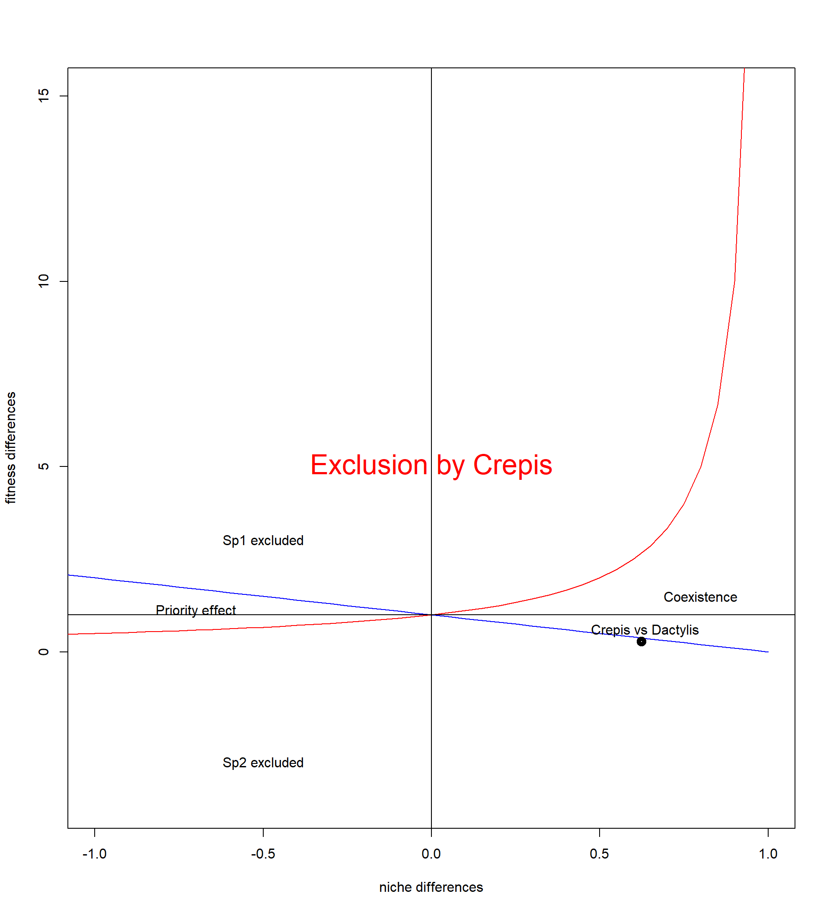
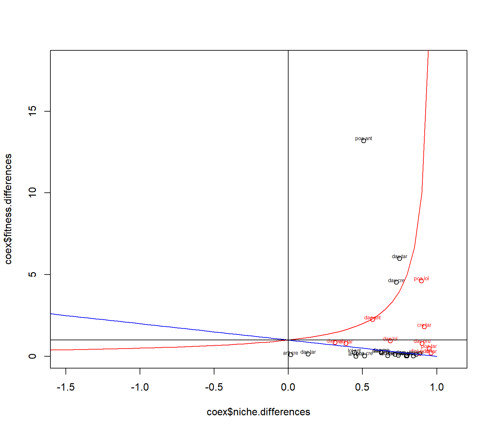

require("knitr")Welcome to the Coexistence session of the Advanced ecology course !
Today, you will calculate niches and fitness differences from equations described in Chesson, 2000. These equation will allow you to predict whether or not plant species from our pot experiment could coexist.
There are several steps needed in order to determine potential species coexistence :
First, we need to derive all possible competition coefficients \(α\) (intraspecific = species competing with themselves, interspecific = species competing with another species)
Then, we need to calculate the \(λ\) intrinsinc growth rate for each of the species growing alone
After that, we can calculate niche differences and fitness differences between every species pair
And finally, we can assess whether or not plant can coexist
(0) Load dataset from the pot experiment
First, for knitting this tutorial, you need to load the following packages:
Note that no packages are needed for the analyses themselves, you can ignore this step if you work only with raw Rscript.
Then, you need to define the project folder as your working directory:
# change here for your own path
path<-"~/Uni/GitHub Repos/Advanced_ecology_coexistence_2023"
# set your working directory
setwd(path)
# this is a knitting option, for knitting in the correct folder (you don't need this if you use basic Rscript)
knitr::opts_knit$set(root.dir = rprojroot::find_rstudio_root_file())Finally, you can read the text file with the data set and have a first look at it:
data<- read.table("data/coexistence_advanced_course.txt", header = T)
head(data) Competition foc_specie comp_specie n_replicate Biomasse
6 0 ant.odo 0 1 2.79
7 0 ant.odo 0 2 1.97
8 0 ant.odo 0 3 1.27
9 0 ant.odo 0 4 1.94
10 0 ant.odo 0 5 2.81
20 0 cre.bie 0 1 1.45(1) Compute competition coefficients
(a) Example with 2 species
First, let’s try with the example seen before: Dactylis glomerata (dac.glo) versus Crepis biennis (cre.bie).
- intrinsic growth rate
We need to get the \(λ\) for both species growing alone. We selected the data of dac.glo by using the function subset()
# let's select the data of dactylis glomerata
dac.glo_data<- subset(data, data$foc_specie == "dac.glo")Now your turn! Try to select only the focal plants of dac.glo growing alone using the function subset()
Solution
# let's select the data of dactylis glomerata growing alone
dac.glo_alone<- subset(dac.glo_data, dac.glo_data$comp_specie == 0)
#or!
dac.glo_alone<- subset(dac.glo_data, dac.glo_data$Competition == 0)Once you got the subset of the data, it is very easy to calculate the intrinsic growth rate \(λ_i\) for Dactylis glomerata
#lambda for dactylis glomerata
dac.glo_lambda<- mean(dac.glo_alone$Biomasse)Now your turn! Calculate the \(λ_j\) for Crepis biennis on your own
Solution
cre.bie_data<- subset(data, data$foc_specie == "cre.bie")
cre.bie_alone<- subset(cre.bie_data, cre.bie_data$comp_specie == 0)
cre.bie_lambda<- mean(cre.bie_alone$Biomasse)- intraspecific competition coefficients
Secondly, we will compute the intraspecific coefficient \(α_{ii}\) for Dactylis glomerata. For this, you will use the following equation: \[ α_{ii} = log(\frac{biomasse_{ii}}{λ_i}) \tag{1}\]
Now your turn! Do you have any idea how to do this? Why not using the same function subset() that we used before?
Solution
dac.glo_intra<- subset(dac.glo_data, dac.glo_data$Competition==1)
#or!
dac.glo_intra<- subset(dac.glo_data, dac.glo_data$comp_specie=="dac.glo")
# code transcription of equation (1) for dac.glo
dac.glo_intra_competition<- log(mean(dac.glo_intra$Biomasse)/mean(dac.glo_alone$Biomasse))Let’s also do the same for Crepis biennis and get \(α_{jj}\)
Solution
cre.bie_intra<- subset(cre.bie_data, cre.bie_data$Competition==1)
#or!
cre.bie_intra<- subset(cre.bie_data, cre.bie_data$comp_specie=="cre.bie")
# code transcription of equation (1) for dac.glo
cre.bie_intra_competition<- log(mean(cre.bie_intra$Biomasse)/mean(cre.bie_alone$Biomasse))- interspecific competition coefficients
Then, we will calculate both of the \(α_{ij}\) and \(α_{ji}\) with the following equations:
\[
α_{ij} = log(\frac{biomasse_{ij}}{λ_i})
\tag{2}\]
\[
α_{ji} = log(\frac{biomasse_{ji}}{λ_j})
\tag{3}\]
Now your turn! No surprises here, try to retrieve the following values:
Solution
# first, let's get alpha ij for dactylis glomerata
dac.glo_cre.bie<- subset(dac.glo_data, dac.glo_data$comp_specie == "cre.bie")
dac.glo_cre.bie_competition<- log(mean(dac.glo_cre.bie$Biomasse)/mean(dac.glo_alone$Biomasse))
dac.glo_cre.bie_competition[1] -0.3896812Solution
# secondly, let's compute alpha ji for crepis biennis
cre.bie_dac.glo<- subset(cre.bie_data, cre.bie_data$comp_specie == "dac.glo")
cre.bie_dac.glo_competition<- log(mean(cre.bie_dac.glo$Biomasse)/mean(cre.bie_alone$Biomasse))
cre.bie_dac.glo_competition[1] -0.3562447So, did you find the same values for \(α_{ij}\) and \(α_{ji}\) ?
(b) Get the full competition matrix
Now let’s add a bit of complexity, with a for {} loop that computes the full competition matrix. First, we should save the species names in a variable
##register species for loop
sp<-levels(droplevels(as.factor((data$foc_specie))))Then, we need to define an empty matrix of competition coefficients \(α\) that has the same length than our species variable sp
# define the competition matrix
all_alpha<-matrix(data = NA, nrow = length(sp), ncol = length(sp))We also need an empty matrix for our intrinsic growth rate \(λ\),
Now your turn! Try to create an empty matrix for the \(λ\)
Solution
all_lambda<- matrix(data = NA, nrow = length(sp), ncol = 1)Finally, we need an empty data set that saves temporary data about the selected species.
temporary_sp_data<-list()How to do a for {} loop? Good question! Let’s take it step by step…
- step 1: initialisation of the loop
We have two matrices to fill, the \(α\) matrix, and the \(λ\) matrix. Let’s start by initialising the \(λ\) matrix.
for (i in 1:length(sp)) {
# here you tell R what to do with each species
}Now let’s add the intialisation of the second loop in order to fill the pairwise coefficient matrix
for (i in 1:length(sp)) {
# here you tell R what to do with each species
for (j in 1:length(sp)){
# here you will tell R what to do for each pairwise coefficient (ii, jj, ij and ji)
}
}- step 2: the lambda loop
Do you remember the temporary_sp_data variable? Now is the time to use it! We are simply going to save the data for the selected species i temporarily inside the loop, using the subset() function like in the example before with 2 species
for (i in 1:length(sp)) {
# here you tell R what to do with each species
#we need to save the data for each species i
temporary_sp_data<-subset(data, data$foc_specie==sp[i])
#let's subset again just like in the example to select competition level = 0
temporary_lambda_data<-subset(temporary_sp_data, temporary_sp_data$Competition == 0)
#then you can save the species lambda in the all_lambda matrix we created before
all_lambda[i]<-mean(temporary_lambda_data$Biomasse)
for (j in 1:length(sp)){
# here you will tell R what to do for each pairwise coefficient (ii, jj, ij and ji)
}
}Our variable all_lambda now needs better names for their rows and columns. We can use sp to rename the rows of our matrix, and simply call the column "lambda".
rownames(all_lambda)<-sp
colnames(all_lambda)<-"lambda"- step 3: the alpha loop
Computing the pairwise coefficient loop is not much more complicated. You can create a subset of temporary_sp_data using the subset() function, selecting species j. Then, you can use the same code as before to compute the log.ratio between species \(i\) and species \(j\).
Now your turn! How to solve these questions:
for (i in 1:length(sp)) {
# here you tell R what to do with each species
#we need to save the data for each species i
temporary_sp_data<-subset(data, data$foc_specie==sp[i])
#let's subset again just like in the example to select competition level = 0
temporary_lambda_data<-subset(temporary_sp_data, temporary_sp_data$Competition == 0)
#then you can save the species lambda in the all_lambda matrix we created before
all_lambda[i]<-mean(temporary_lambda_data$Biomasse)
for (j in 1:length(sp)){
# here you will tell R what to do for each pairwise coefficient (ii, jj, ij and ji)
# what do you think should go there instead of ...... ?
temporary_alpha_data <- subset(temporary_sp_data, temporary_sp_data$comp_specie== ....... )
#let's compute the log.ratio for every j
log_ratio<- log(mean(temporary_alpha_data$Biomass)/mean(temporary_lambda_data$Biomasse))
#other exercise, how do we save it in our all_alpha matrice in your opinion?
all_alpha
}
}Solution
for (i in 1:length(sp)) {
# here you tell R what to do with each species
#we need to save the data for each species i
temporary_sp_data<-subset(data, data$foc_specie==sp[i])
#let's subset again just like in the example to select competition level = 0
temporary_lambda_data<-subset(temporary_sp_data, temporary_sp_data$Competition == 0)
#then you can save the species lambda in the all_lambda matrix we created before
all_lambda[i]<-mean(temporary_lambda_data$Biomasse)
for (j in 1:length(sp)){
# here you will tell R what to do for each pairwise coefficient (ii, jj, ij and ji)
#use sp[j]!
temporary_alpha_data <- subset(temporary_sp_data, temporary_sp_data$comp_specie== sp[j])
#let's compute the log.ratio for every j
log_ratio<- log(mean(temporary_alpha_data$Biomass)/mean(temporary_lambda_data$Biomasse))
#all_alpha is a matrix so you can use matrix[i,j]
all_alpha[i,j]<- log_ratio
}
}We now have all \(α\) and the \(λ\) in matrices!
Now your turn! Rename them as before with meaningful colnames() and rownames()
Solution
rownames(all_lambda)<-sp
colnames(all_lambda)<-"lambda"
rownames(all_alpha)<-sp
colnames(all_alpha)<-sp(2) Niche and fitness differences
(a) Example with 2 species
Now we have all needed coefficient in order to calculate niche and fitness differences using the following equations:
niche differences:
\[ 1 - ρ = 1 - \sqrt{\frac{α_{ij}.α_{ji}}{α_{ii}.α_{jj}}} \tag{4}\]
fitness differences:
\[ \frac{κ_i}{κ_j} = \frac{λ_i}{λ_j} . \sqrt{\frac{α_{ij}.α_{ii}}{α_{ji}.α_{jj}}} \tag{5}\]
Now your turn! You have all the coefficient you need from the previous part, just apply the formula using sqrt()
Warning!
We only compute one niche and one fitness differences per pair. The condition to choose which species is \(i\) and which species is \(j\) is \(λ_i>λ_j\).
Solution
# niche differences between dac.glo and cre.bie
niche_diff_dac.glo_cre.bie<- 1-sqrt((dac.glo_cre.bie_competition*cre.bie_dac.glo_competition)/(dac.glo_intra_competition*cre.bie_intra_competition))
#fitness differences between dac.glo and cre.bie
fitness_diff_dac.glo_cre.bie<- (dac.glo_lambda/cre.bie_lambda)*sqrt((dac.glo_cre.bie_competition*dac.glo_intra_competition)/(cre.bie_dac.glo_competition*cre.bie_intra_competition)) Time to see the results! Do you think Dactylis glomerata and Crepis biennis can coexist ?
sim<-data.frame(niche_overlap=c(seq(0,3, 0.05))) # creating a vector with niche overlap
sim$niche_diff<-(1-sim$niche_overlap) # calculating stabilizating differences from niche overlap 1-rho
sim$fitness_differences_sp_1<-(1/sim$niche_overlap) # red line in your graph
sim$fitness_differences_sp_temp<- 1-sim$fitness_differences_sp_1 #this is an intermediate step to see the differences above one
sim$fitness_differences_sp_2<- sim$niche_overlap# blue line in your graph
plot(NULL, xlab="niche differences", ylab="fitness differences", xlim=c(-1, 1), ylim=c(-4,8))
lines(sim$niche_diff, sim$fitness_differences_sp_1, type = "l", lty = 1, col="red")
lines(sim$niche_diff, sim$fitness_differences_sp_2, type = "l", lty = 1, col="blue")
abline(h=1,v=0)
# defines coexistence spaces
text(x=-0.7, y=1.1, "Priority effect")
text(x=0.8, y=1.5, "Coexistence")
text(x=-0.5, y=3, "Sp1 excluded")
text(x=-0.5, y=-3, "Sp2 excluded")
points(niche_diff_dac.glo_cre.bie,fitness_diff_dac.glo_cre.bie,lwd=5)
text(niche_diff_dac.glo_cre.bie+0.01,fitness_diff_dac.glo_cre.bie+0.3, "Crepis vs Dactylis")
text(0,5, "Exclusion by Crepis", col = "red", cex = 2)
No they can’t! Crepis biennis is predicted to exclude Dactylis glomerata.
(b) Use the full matrix to plot all species pairs
Now you already have a good idea how to calculate coexistence for species pair. Let’s just relax and simply run the functions that will give you the results for the rest of the species.
The first function will remove the facilitation from the competition matrix and assign a random weak competition number instead. The MCT framework doesn’t allow facilitation and would return N/As.
Now your turn! Do you know why ?
Solution
# because of the square roots !
# if some coefficients are negative, you can't compute a negative square rootThe second function will return from a competition matrix and all corresponding intrinsic growth rates: niche differences, fitness differences and whether or not the species can coexist
#erase facilitation in a competition matrix
rm_facilitation<- function (all) {
seq<-runif(n= length(all[all>0]), min = min(abs(all))/2, max = min(abs(all)))
seq<- -(seq)
all[all>0]<-seq
return(all)
}
# this is the coexistence function, you just give it alpha = competition coefficient matrix and lambda = intrinsic growth rate
#and it computes for you the niche differences, fitness differences, and whether or not species can coexist
pairwise_coexistence <- function(alpha, lambda) {
coex<-matrix(data = NA, ncol = 4)
sp <- colnames(alpha)
for (i in 1:length(sp)) {
for (j in 1:length(sp)) {
if (lambda[i,]>=lambda[j,]){
fitness<-(lambda[j,]/lambda[i,])*(sqrt((alpha[i,j]*alpha[i,i])/(alpha[j,i]*alpha[j,j])))
niche<-(1-sqrt((alpha[i,j]*alpha[j,i])/(alpha[i,i]*alpha[j,j])))
coex<-rbind(coex, c(sp[i], sp[j], niche, fitness))
}
}
}
coex<-as.data.frame(coex)
coex<-coex[-c(1),]
colnames(coex)<- c("sp1", "sp2", "niche.differences", "fitness.differences")
coex<-as.data.frame(coex)
##clear coex dataframe uneeded combinations
rownames(coex)<- NULL
for (i in 1:nrow(coex)) {
if (coex$sp1[i]==coex$sp2[i]){
coex[i,]<-NA
}
}
coex<-na.omit(coex)
coex$niche.differences<-as.numeric(coex$niche.differences)
coex$fitness.differences<-as.numeric(coex$fitness.differences)
rownames(coex)<- NULL
for (i in 1:nrow(coex)) {
if(coex$fitness.differences[i]>1){
coex$coexistence[i]<-(coex$fitness.differences[i])<=(-1/(coex$niche.differences[i]-1))&(coex$niche.differences[i]>=0)
}
if(coex$fitness.differences[i]<=1){
coex$coexistence[i]<-(coex$fitness.differences[i])>=(1-coex$niche.differences[i])&(coex$niche.differences[i]>=0)
}
}
return(coex)
}# let's now apply the function to our data
all_alpha<-rm_facilitation(all_alpha)
coex<-pairwise_coexistence(all_alpha,all_lambda)
head(coex) sp1 sp2 niche.differences fitness.differences coexistence
1 ant.odo cre.bie 0.01760664 0.096093218 FALSE
2 ant.odo pru.gra 0.38836311 0.009053227 FALSE
3 ant.odo tar.off 0.53191882 1.025598629 TRUE
4 cre.bie pru.gra 0.75903231 0.051117253 FALSE
5 cre.bie tar.off 0.90861749 1.645697190 TRUE
6 dac.glo ant.odo 0.56908478 2.257621500 TRUEsim<-data.frame(niche_overlap=c(seq(0,3, 0.05))) # creating a vector with niche overlap
sim$niche_diff<-(1-sim$niche_overlap) # calculating stabilizating differences from niche overlap 1-rho
sim$fitness_differences_sp_1<-(1/sim$niche_overlap) # red line in your graph
sim$fitness_differences_sp_temp<- 1-sim$fitness_differences_sp_1 #this is an intermediate step to see the differences above one
sim$fitness_differences_sp_2<- sim$niche_overlap# blue line in your graph
plot(coex$fitness.differences~coex$niche.differences, xlim=c(-1.5,1.1), ylim=c(0,18), col= ifelse(coex$coexistence==T, "red","black"))
text(coex$niche.differences, coex$fitness.differences+0.15, labels=paste(substr(coex$sp1,1,3),substr(coex$sp2,1,3)),cex = 0.5,col= ifelse(coex$coexistence==T, "red","black"))
lines(sim$niche_diff, sim$fitness_differences_sp_1, type = "l", lty = 1, col="red")
lines(sim$niche_diff, sim$fitness_differences_sp_2, type = "l", lty = 1, col="blue")
abline(h=1,v=0)